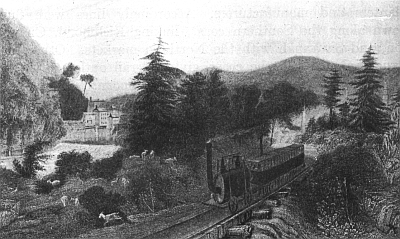

THE RISE OF THE INDUSTRIAL SYSTEM
If Jefferson could have lived to see the Stars and Stripes planted on the Pacific Coast, the broad empire of Texas added to the planting states, and the valley of the Willamette waving with wheat sown by farmers from New England, he would have been more than fortified in his faith that the future of America lay in agriculture. Even a stanch old Federalist like Gouverneur Morris or Josiah Quincy would have mournfully conceded both the prophecy and the claim. Manifest destiny never seemed more clearly written in the stars.
As the farmers from the Northwest and planters from the Southwest poured in upon the floor of Congress, the party of Jefferson, christened anew by Jackson, grew stronger year by year. Opponents there were, no doubt, disgruntled critics and Whigs by conviction; but in 1852 Franklin Pierce, the Democratic candidate for President, carried every state in the union except Massachusetts, Vermont, Kentucky, and Tennessee.
This victory, a triumph under ordinary circumstances, was all the more significant in that Pierce was pitted against a hero of the Mexican War, General Scott, whom the Whigs, hoping to win by rousing the martial ardor of the voters, had nominated. On looking at the election returns, the new President calmly assured the planters that "the general principle of reduction of duties with a view to revenue may now be regarded as the settled policy of the country." With equal confidence, he waved aside those agitators who devoted themselves "to the supposed interests of the relatively few Africans in the United States." Like a watchman in the night he called to the country: "All's well."
The party of Hamilton and Clay lay in the dust.
The Industrial Revolution
As pride often goeth before a fall, so sanguine expectation is sometimes the symbol of defeat. Jackson destroyed the bank. Polk signed the tariff bill of 1846 striking an effective blow at the principle of protection for manufactures. Pierce promised to silence the abolitionists. His successor was to approve a drastic step in the direction of free trade. Nevertheless all these things left untouched the springs of power that were in due time to make America the greatest industrial nation on the earth; namely, vast national resources, business enterprise, inventive genius, and the free labor supply of Europe. Unseen by the thoughtless, unrecorded in the diaries of wiseacres, rarely mentioned in the speeches of statesmen, there was swiftly rising such a tide in the affairs of America as Jefferson and Hamilton never dreamed of in their little philosophies.
The Inventors. —Watt and Boulton experimenting with steam in England, Whitney combining wood and steel into a cotton gin, Fulton and Fitch applying the steam engine to navigation, Stevens and Peter Cooper trying out the "iron horse" on "iron highways," Slater building spinning mills in Pawtucket, Howe attaching the needle to the flying wheel, Morse spanning a continent with the telegraph, Cyrus Field linking the markets of the new world with the old along the bed of the Atlantic, McCormick breaking the sickle under the reaper—these men and a thousand more were destroying in a mighty revolution of industry the world of the stagecoach and the tallow candle which Washington and Franklin had inherited little changed from the age of Cæsar. Whitney was to make cotton king. Watt and Fulton were to make steel and steam masters of the world. Agriculture was to fall behind in the race for supremacy.
Industry Outstrips Planting. —The story of invention, that tribute to the triumph of mind over matter, fascinating as a romance, need not be treated in detail here. The effects of invention on social and political life, multitudinous and never-ending, form the very warp and woof of American progress from the days of Andrew Jackson to the latest hour. Neither the great civil conflict—the clash of two systems—nor the problems of the modern age can be approached without an understanding of the striking phases of industrialism.
A New England Mill Built
in 1793
A New England Mill Built in 1793
First and foremost among them was the uprush of mills managed by captains of industry and manned by labor drawn from farms, cities, and foreign lands. For every planter who cleared a domain in the Southwest and gathered his army of bondmen about him, there rose in the North a magician of steam and steel who collected under his roof an army of free workers.
In seven league boots this new giant strode ahead of the Southern giant. Between 1850 and 1859, to use dollars and cents as the measure of progress, the value of domestic manufactures including mines and fisheries rose from $1,019,106,616 to $1,900,000,000, an increase of eighty-six per cent in ten years. In this same period the total production of naval stores, rice, sugar, tobacco, and cotton, the staples of the South, went only from $165,000,000, in round figures, to $204,000,000. At the halfway point of the century, the capital invested in industry, commerce, and cities far exceeded the value of all the farm land between the Atlantic and the Pacific; thus the course of economy had been reversed in fifty years. Tested by figures of production, King Cotton had shriveled by 1860 to a petty prince in comparison, for each year the captains of industry turned out goods worth nearly twenty times all the bales of cotton picked on Southern plantations. Iron, boots and shoes, and leather goods pouring from Northern mills surpassed in value the entire cotton output.
The Agrarian West Turns to Industry. —Nor was this vast enterprise confined to the old Northeast where, as Madison had sagely remarked, commerce was early dominant. "Cincinnati," runs an official report in 1854, "appears to be a great central depot for ready-made clothing and its manufacture for the Western markets may be said to be one of the great trades of that city." There, wrote another traveler, "I heard the crack of the cattle driver's whip and the hum of the factory: the West and the East meeting."
Louisville and St. Louis were already famous for their clothing trades and the manufacture of cotton bagging. Five hundred of the two thousand woolen mills in the country in 1860 were in the Western states.
Of the output of flour and grist mills, which almost reached in value the cotton crop of 1850, the Ohio Valley furnished a rapidly growing share. The old home of Jacksonian democracy, where Federalists had been almost as scarce as monarchists, turned slowly backward, as the needle to the pole, toward the principle of protection for domestic industry, espoused by Hamilton and defended by Clay.

The Extension of Canals and Railways. —As necessary to mechanical industry as steel and steam power was the great market, spread over a wide and diversified area and knit together by efficient means of transportation. This service was supplied to industry by the steamship, which began its career on the Hudson in 1807; by the canals, of which the Erie opened in 1825 was the most noteworthy; and by the railways, which came into practical operation about 1830.
From an old print
An Early Railway
With sure instinct the Eastern manufacturer reached out for the markets of the Northwest territory where free farmers were producing annually staggering crops of corn, wheat, bacon, and wool. The two great canal systems—the Erie connecting New York City with the waterways of the Great Lakes and the Pennsylvania chain linking Philadelphia with the headwaters of the Ohio—gradually turned the tide of trade from New Orleans to the Eastern seaboard. The railways followed the same paths. By 1860, New York had rail connections with Chicago and St. Louis, one of the routes running through the Hudson and Mohawk valleys and along the Great Lakes, the other through Philadelphia and Pennsylvania and across the rich wheat fields of Ohio, Indiana, and Illinois. Baltimore, not to be outdone by her two rivals, reached out over the mountains for the Western trade and in 1857 had trains running into St. Louis.
In railway enterprise the South took more interest than in canals, and the friends of that section came to its aid. To offset the magnet drawing trade away from the Mississippi Valley, lines were built from the Gulf to Chicago, the Illinois Central part of the project being a monument to the zeal and industry of a Democrat, better known in politics than in business, Stephen A. Douglas. The swift movement of cotton and tobacco to the North or to seaports was of common concern to planters and manufacturers.
Accordingly lines were flung down along the Southern coast, linking Richmond, Charleston, and Savannah with the Northern markets. Other lines struck inland from the coast, giving a rail outlet to the sea for Raleigh, Columbia, Atlanta, Chattanooga, Nashville, and Montgomery. Nevertheless, in spite of this enterprise, the mileage of all the Southern states in 1860 did not equal that of Ohio, Indiana, and Illinois combined.
Banking and Finance. —Out of commerce and manufactures and the construction and operation of railways came such an accumulation of capital in the Northern states as merchants of old never imagined.
The banks of the four industrial states of Massachusetts, Connecticut, New York, and Pennsylvania in 1860 had funds greater than the banks in all the other states combined. New York City had become the money market of America, the center to which industrial companies, railway promoters, farmers, and planters turned for capital to initiate and carry on their operations. The banks of Louisiana, South Carolina, Georgia, and Virginia, it is true, had capital far in excess of the banks of the Northwest; but still they were
relatively small compared with the financial institutions of the East.
The Growth of the Industrial Population. —A revolution of such magnitude in industry, transport, and finance, overturning as it did the agrarian civilization of the old Northwest and reaching out to the very borders of the country, could not fail to bring in its train consequences of a striking character. Some were immediate and obvious. Others require a fullness of time not yet reached to reveal their complete significance. Outstanding among them was the growth of an industrial population, detached from the land, concentrated in cities, and, to use Jefferson's phrase, dependent upon "the caprices and casualties of trade"
for a livelihood. This was a result, as the great Virginian had foreseen, which flowed inevitably from public and private efforts to stimulate industry as against agriculture.
Lowell, Massachusetts, in
1838, an Early Industrial
Town
From an old print
Lowell, Massachusetts, in 1838, an Early Industrial Town
It was estimated in 1860, on the basis of the census figures, that mechanical production gave employment to 1,100,000 men and 285,000 women, making, if the average number of dependents upon them be reckoned, nearly six million people or about one-sixth of the population of the country sustained from manufactures. "This," runs the official record, "was exclusive of the number engaged in the production of many of the raw materials and of the food for manufacturers; in the distribution of their products, such as merchants, clerks, draymen, mariners, the employees of railroads, expresses, and steamboats; of capitalists, various artistic and professional classes, as well as carpenters, bricklayers, painters, and the members of other mechanical trades not classed as manufactures. It is safe to assume, then, that one-third of the whole population is supported, directly, or indirectly, by manufacturing industry." Taking, however, the number of persons directly supported by manufactures, namely about six millions, reveals the astounding fact that the white laboring population, divorced from the soil, already exceeded the number of slaves on Southern farms and plantations.
Immigration. —The more carefully the rapid growth of the industrial population is examined, the more surprising is the fact that such an immense body of free laborers could be found, particularly when it is recalled to what desperate straits the colonial leaders were put in securing immigrants,—slavery, indentured servitude, and kidnapping being the fruits of their necessities. The answer to the enigma is to be found partly in European conditions and partly in the cheapness of transportation after the opening of the era of steam navigation. Shrewd observers of the course of events had long foreseen that a flood of cheap labor was bound to come when the way was made easy. Some, among them Chief Justice Ellsworth, went so far as to prophesy that white labor would in time be so abundant that slavery would disappear as the more costly of the two labor systems. The processes of nature were aided by the policies of government in England and Germany.
The Coming of the Irish. —The opposition of the Irish people to the English government, ever furious and irrepressible, was increased in the mid forties by an almost total failure of the potato crop, the main support of the peasants. Catholic in religion, they had been compelled to support a Protestant church.
Tillers of the soil by necessity, they were forced to pay enormous tributes to absentee landlords in England whose claim to their estates rested upon the title of conquest and confiscation. Intensely loyal to their race, the Irish were subjected in all things to the Parliament at London, in which their small minority of representatives had little influence save in holding a balance of power between the two contending English parties. To the constant political irritation, the potato famine added physical distress beyond description. In cottages and fields and along the highways the victims of starvation lay dead by the hundreds, the relief which charity afforded only bringing misery more sharply to the foreground. Those who were fortunate enough to secure passage money sought escape to America. In 1844 the total immigration into the United
States was less than eighty thousand; in 1850 it had risen by leaps and bounds to more than three hundred thousand. Between 1820 and 1860 the immigrants from the United Kingdom numbered 2,750,000, of whom more than one-half were Irish. It has been said with a touch of exaggeration that the American canals and railways of those days were built by the labor of Irishmen.
The German Migration. —To political discontent and economic distress, such as was responsible for the coming of the Irish, may likewise be traced the source of the Germanic migration. The potato blight that fell upon Ireland visited the Rhine Valley and Southern Germany at the same time with results as pitiful, if less extensive. The calamity inflicted by nature was followed shortly by another inflicted by the despotic conduct of German kings and princes. In 1848 there had occurred throughout Europe a popular uprising in behalf of republics and democratic government. For a time it rode on a full tide of success. Kings were overthrown, or compelled to promise constitutional government, and tyrannical ministers fled from their palaces. Then came reaction. Those who had championed the popular cause were imprisoned, shot, or driven out of the land. Men of attainments and distinction, whose sole offense was opposition to the government of kings and princes, sought an asylum in America, carrying with them to the land of their adoption the spirit of liberty and democracy. In 1847 over fifty thousand Germans came to America, the forerunners of a migration that increased, almost steadily, for many years. The record of 1860 showed that in the previous twenty years nearly a million and a half had found homes in the United States. Far and wide they scattered, from the mills and shops of the seacoast towns to the uttermost frontiers of Wisconsin and Minnesota.
The Labor of Women and Children. —If the industries, canals, and railways of the country were largely manned by foreign labor, still important native sources must not be overlooked; above all, the women and children of the New England textile districts. Spinning and weaving, by a tradition that runs far beyond the written records of mankind, belonged to women. Indeed it was the dexterous housewives, spinsters, and boys and girls that laid the foundations of the textile industry in America, foundations upon which the mechanical revolution was built. As the wheel and loom were taken out of the homes to the factories operated by water power or the steam engine, the women and, to use Hamilton's phrase, "the children of tender years," followed as a matter of course. "The cotton manufacture alone employs six thousand persons in Lowell," wrote a French observer in 1836; "of this number nearly five thousand are young women from seventeen to twenty-four years of age, the daughters of farmers from the different New England states." It was not until after the middle of the century that foreign lands proved to be the chief source from which workers were recruited for the factories of New England. It was then that the daughters of the Puritans, outdone by the competition of foreign labor, both of men and women, left the spinning jenny and the loom to other hands.
The Rise of Organized Labor. —The changing conditions of American life, marked by the spreading mill towns of New England, New York, and Pennsylvania and the growth of cities like Buffalo, Cincinnati, Louisville, St. Louis, Detroit, and Chicago in the West, naturally brought changes, as Jefferson had prophesied, in "manners and morals." A few mechanics, smiths, carpenters, and masons, widely scattered through farming regions and rural villages, raise no such problems as tens of thousands of workers collected in one center in daily intercourse, learning the power of coöperation and union.
Even before the coming of steam and machinery, in the "good old days" of handicrafts, laborers in many trades—printers, shoemakers, carpenters, for example—had begun to draw together in the towns for the advancement of their interests in the form of higher wages, shorter days, and milder laws. The shoemakers of Philadelphia, organized in 1794, conducted a strike in 1799 and held together until indicted seven years later for conspiracy. During the twenties and thirties, local labor unions sprang up in all industrial centers and they led almost immediately to city federations of the several crafts.
As the thousands who were dependent upon their daily labor for their livelihood mounted into the millions and industries spread across the continent, the local unions of craftsmen grew into national craft
organizations bound together by the newspapers, the telegraph, and the railways. Before 1860 there were several such national trade unions, including the plumbers, printers, mule spinners, iron molders, and stone cutters. All over the North labor leaders arose—men unknown to general history but forceful and resourceful characters who forged links binding scattered and individual workers into a common brotherhood. An attempt was even made in 1834 to federate all the crafts into a permanent national organization; but it perished within three years through lack of support. Half a century had to elapse before the American Federation of Labor was to accomplish this task.
All the manifestations of the modern labor movement had appeared, in germ at least, by the time the mid-century was reached: unions, labor leaders, strikes, a labor press, a labor political program, and a labor political party. In every great city industrial disputes were a common occurrence. The papers recorded about four hundred in two years, 1853-54, local affairs but forecasting economic struggles in a larger field.
The labor press seems to have begun with the founding of the Mechanics' Free Press in Philadelphia in 1828 and the establishment of the New York Workingman's Advocate shortly afterward. These semi-political papers were in later years followed by regular trade papers designed to weld together and advance the interests of particular crafts. Edited by able leaders, these little sheets with limited circulation wielded an enormous influence in the ranks of the workers.
Labor and Politics. —As for the political program of labor, the main planks were clear and specific: the abolition of imprisonment for debt, manhood suffrage in states where property qualifications still prevailed, free and universal education, laws protecting the safety and health of workers in mills and factories, abolition of lotteries, repeal of laws requiring militia service, and free land in the West.
Into the labor papers and platforms there sometimes crept a note of hostility to the masters of industry, a sign of bitterness that excited little alarm while cheap land in the West was open to the discontented. The Philadelphia workmen, in issuing a call for a local convention, invited "all those of our fellow citizens who live by their own labor and none other." In Newcastle county, Delaware, the association of working people complained in 1830: "The poor have no laws; the laws are made by the rich and of course for the rich."
Here and there an extremist went to the length of advocating an equal division of wealth among all the people—the crudest kind of communism.
Agitation of this character produced in labor circles profound distrust of both Whigs and Democrats who talked principally about tariffs and banks; it resulted in attempts to found independent labor parties. In Philadelphia, Albany, New York City, and New England, labor candidates were put up for elections in the early thirties and in a few cases were victorious at the polls. "The balance of power has at length got into the hands of the working people, where it properly belongs," triumphantly exclaimed the Mechanics' Free Press of Philadelphia in 1829. But the triumph was illusory. Dissensions appeared in the labor ranks. The old party leaders, particularly of Tammany Hall, the Democratic party organization in New York City, offered concessions to labor in return for votes. Newspapers unsparingly denounced "trade union politicians" as "demagogues," "levellers," and "rag, tag, and bobtail"; and some of them, deeming labor unrest the sour fruit of manhood suffrage, suggested disfranchisement as a remedy. Under the influence of concessions and attacks the political fever quickly died away, and the end of the decade left no remnant of the labor political parties. Labor leaders turned to a task which seemed more substantial and practical, that of organizing workingmen into craft unions for the definite purpose of raising wages and reducing hours.
The Industrial Revolution and National Politics
Southern Plans for Union with the West. —It was long the design of Southern statesmen like Calhoun to hold the West and the South together in one political party. The theory on which they based their hope was simple. Both sections were agricultural—the producers of raw materials and the buyers of manufactured goods. The planters were heavy purchasers of Western bacon, pork, mules, and grain. The Mississippi
River and its tributaries formed the natural channel for the transportation of heavy produce southward to the plantations and outward to Europe. Therefore, ran their political reasoning, the interests of the two sections were one. By standing together in favor of low tariffs, they could buy their manufactures cheaply in Europe and pay for them in cotton, tobacco, and grain. The union of the two sections under Jackson's management seemed perfect.
The East Forms Ties with the West. —Eastern leaders were not blind to the ambitions of Southern statesmen. On the contrary, they also recognized the importance of forming strong ties with the agrarian West and drawing the produce of the Ohio Valley to Philadelphia and New York. The canals and railways were the physical signs of this economic union, and the results, commercial and political, were soon evident. By the middle of the century, Southern economists noted the change, one of them, De Bow, lamenting that "the great cities of the North have severally penetrated the interior with artificial lines until they have taken from the open and untaxed current of the Mississippi the commerce produced on its borders." To this writer it was an astounding thing to behold "the number of steamers that now descend the upper Mississippi River, loaded to the guards with produce, as far as the mouth of the Illinois River and then turn up that stream with their cargoes to be shipped to New York via Chicago. The Illinois canal has not only swept the whole produce along the line of the Illinois River to the East, but it is drawing the products of the upper Mississippi through the same channel; thus depriving New Orleans and St. Louis of a rich portion of their former trade."
If to any shippers the broad current of the great river sweeping down to New Orleans offered easier means of physical communication to the sea than the canals and railways, the difference could be overcome by the credit which Eastern bankers were able to extend to the grain and produce buyers, in the first instance, and through them to the farmers on the soil. The acute Southern observer just quoted, De Bow, admitted with evident regret, in 1852, that "last autumn, the rich regions of Ohio, Indiana, and Illinois were flooded with the local bank notes of the Eastern States, advanced by the New York houses on produce to be shipped by way of the canals in the spring.... These moneyed facilities enable the packer, miller, and speculator to hold on to their produce until the opening of navigation in the spring and they are no longer obliged, as formerly, to hurry off their shipments during the winter by the way of New Orleans in order to realize funds by drafts on their shipments. The banking facilities at the East are doing as much to draw trade from us as the canals and railways which Eastern capital is constructing." Thus canals, railways, and financial credit were swiftly forging bonds of union between the old home of Jacksonian Democracy in the West and the older home of Federalism in the East. The nationalism to which Webster paid eloquent tribute became more and more real with the passing of time. The self-sufficiency of the pioneer was broken down as he began to watch the produce markets of New York and Philadelphia where the prices of corn and hogs fixed his earnings for the year.
The West and Manufactures. —In addition to the commercial bonds between the East and the West there was growing up a common interest in manufactures. As skilled white labor increased in the Ohio Valley, the industries springing up in the new cities made Western life more like that of the industrial East than like that of the planting South. Moreover, the Western states produced some important raw materials for American factories, which called for protection against foreign competition, notably, wool, hemp, and flax. As the South had little or no foreign competition in cotton and tobacco, the East could not offer protection for her raw materials in exchange for protection for industries. With the West, however, it became possible to establish reciprocity in tariffs; that is, for example, to trade a high rate on wool for a high rate on textiles or iron.
The South Dependent on the North. —While East and West were drawing together, the distinctions between North and South were becoming more marked; the latter, having few industries and producing little save raw materials, was being forced into the position of a dependent section. As a result of the protective tariff, Southern planters were compelled to turn more and more to Northern mills for their cloth, shoes, hats, hoes, plows, and machinery. Nearly all the goods which they bought in Europe in exchange
for their produce came overseas to Northern ports, whence transshipments were made by rail and water to Southern points of distribution. Their rice, cotton, and tobacco, in as far as they were not carried to Europe in British bottoms, were transported by Northern masters. In these ways, a large part of the financial operations connected with the sale of Southern produce and the purchase of goods in exchange passed into the hands of Northern merchants and bankers who, naturally, made profits from their transactions. Finally, Southern planters who wanted to buy more land and more slaves on credit borrowed heavily in the North where huge accumulations made the rates of interest lower than the smaller banks of the South could afford.
The South Reckons the Cost of Economic Dependence. —As Southern dependence upon Northern capital became more and more marked, Southern leaders began to chafe at what they regarded as restraints laid upon their enterprise. In a word, they came to look upon the planter as a tribute-bearer to the manufacturer and financier. "The South," expostulated De Bow, "stands in the attitude of feeding ... a vast population of [Northern] merchants, shipowners, capitalists, and others who, without claims on her progeny, drink up the life blood of her trade.... Where goes the value of our labor but to those who, taking advantage of our folly, ship for us, buy for us, sell to us, and, after turning our own capital to their profitable account, return laden with our money to enjoy their easily earned opulence at home."
Southern statisticians, not satisfied with generalities, attempted to figure out how great was this tribute in dollars and cents. They estimated that the planters annually lent to Northern merchants the full value of their exports, a hundred millions or more, "to be used in the manipulation of foreign imports." They calculated that no less than forty millions all told had been paid to shipowners in profits. They reckoned that, if the South were to work up her own cotton, she would realize from seventy to one hundred millions a year that otherwise went North. Finally, to cap the climax, they regretted that planters spent some fifteen millions a year pleasure-seeking in the alluring cities and summer resorts of the North.
Southern Opposition to Northern Policies. —Proceeding from these premises, Southern leaders drew the logical conclusion that the entire program of economic measures demanded in the North was without exception adverse to Southern interests and, by a similar chain of reasoning, injurious to the corn and wheat producers of the West. Cheap labor afforded by free immigration, a protective tariff raising prices of manufactures for the tiller of the soil, ship subsidies increasing the tonnage of carrying trade in Northern hands, internal improvements forging new economic bonds between the East and the West, a national banking system giving strict national control over the currency as a safeguard against paper inflation—all these devices were regarded in the South as contrary to the planting interest. They were constantly compared with the restrictive measures by which Great Britain more than half a century before had sought to bind American interests.
As oppression justified a war for independence once, statesmen argued, so it can justify it again. "It is curious as it is melancholy and distressing," came a broad hint from South Carolina, "to see how striking is the analogy between the colonial vassalage to which the manufacturing states have reduced the planting states and that which formerly bound the Anglo-American colonies to the British empire.... England said to her American colonies: 'You shall not trade with the rest of the world for such manufactures as are produced in the mother country.' The manufacturing states say to their Southern colonies: 'You shall not trade with the rest of the world for such manufactures as we produce.'" The conclusion was inexorable: either the South must control the national government and its economic measures, or it must declare, as America had done four score years before, its political and economic independence. As Northern mills multiplied, as railways spun their mighty web over the face of the North, and as accumulated capital rose into the hundreds of millions, the conviction of the planters and their statesmen deepened into desperation.
Efforts to Start Southern Industries Fail. —A few of them, seeing the predominance of the North, made determined efforts to introduce manufactures into the South. To the leaders who were averse to secession and nullification this seemed the only remedy for the growing disparity in the power of the two sections.
Societies for the encouragement of mechanical industries were formed, the investment of capital was sought, and indeed a few mills were built on Southern soil. The results were meager. The natural resources, coal and water power, were abundant; but the enterprise for direction and the skilled labor were wanting. The stream of European immigration flowed North and West, not South. The Irish or German laborer, even if he finally made his home in a city, had before him, while in the North, the alternative of a homestead on Western land. To him slavery was a strange, if not a repelling, institution. He did not take to it kindly nor care to fix his home where it flourished. While slavery lasted, the economy of the South was inevitably agricultural. While agriculture predominated, leadership with equal necessity fell to the planting interest. While the planting interest ruled, political opposition to Northern economy was destined to grow in strength.
The Southern Theory of Sectionalism. —In the opinion of the statesmen who frankly represented the planting interest, the industrial system was its deadly enemy. Their entire philosophy of American politics was summed up in a single paragraph by McDuffie, a spokesman for South Carolina: "Owing to the federative character of our government, the great geographical extent of our territory, and the diversity of the pursuits of our citizens in different parts of the union, it has so happened that two great interests have sprung up, standing directly opposed to each other. One of these consists of those manufactures which the Northern and Middle states are capable of producing but which, owing to the high price of labor and the high profits of capital in those states, cannot hold competition with foreign manufactures without the aid of bounties, directly or indirectly given, either by the general government or by the state governments. The other of these interests consists of the great agricultural staples of the Southern states which can find a market only in foreign countries and which can be advantageously sold only in exchange for foreign manufactures which come in competition with those of the Northern and Middle states.... These interests then stand diametrically and irreconcilably opposed to each other. The interest, the pecuniary interest of the Northern manufacturer, is directly promoted by every increase of the taxes imposed upon Southern commerce; and it is unnecessary to add that the interest of the Southern planter is promoted by every diminution of taxes imposed upon the productions of their industry. If, under these circumstances, the manufacturers were clothed with the power of imposing taxes, at their pleasure, upon the foreign imports of the planter, no doubt would exist in the mind of any man that it would have all the characteristics of an absolute and unqualified despotism." The economic soundness of this reasoning, a subject of interesting speculation for the economist, is of little concern to the historian. The historical point is that this opinion was widely held in the South and with the progress of time became the prevailing doctrine of the planting statesmen.
Their antagonism was deepened because they also became convinced, on what grounds it is not necessary to inquire, that the leaders of the industrial interest thus opposed to planting formed a consolidated
"aristocracy of wealth," bent upon the pursuit and attainment of political power at Washington. "By the aid of various associated interests," continued McDuffie, "the manufacturing capitalists have obtained a complete and permanent control over the legislation of Congress on this subject [the tariff].... Men confederated together upon selfish and interested principles, whether in pursuit of the offices or the bounties of the government, are ever more active and vigilant than the great majority who act from disinterested and patriotic impulses. Have we not witnessed it on this floor, sir? Who ever knew the tariff men to divide on any question affecting their confederated interests?... The watchword is, stick together, right or wrong upon every question affecting the common cause. Such, sir, is the concert and vigilance and such the combinations by which the manufacturing party, acting upon the interests of some and the prejudices of others, have obtained a decided and permanent control over public opinion in all the tariff states." Thus, as the Southern statesman would have it, the North, in matters affecting national policies, was ruled by a "confederated interest" which menaced the planting interest. As the former grew in magnitude and attached to itself the free farmers of the West through channels of trade and credit, it followed as night the day that in time the planters would be overshadowed and at length overborne in the struggle of giants. Whether the theory was sound or not, Southern statesmen believed it and acted upon it.
M. Beard, Short History of the American Labor Movement.
E.L. Bogart, Economic History of the United States.
J.R. Commons, History of Labour in the United States (2 vols.).
E.R. Johnson, American Railway Transportation.
C.D. Wright, Industrial Evolution of the United States.
Questions
1. What signs pointed to a complete Democratic triumph in 1852?
2. What is the explanation of the extraordinary industrial progress of America?
3. Compare the planting system with the factory system.
4. In what sections did industry flourish before the Civil War? Why?
5. Show why transportation is so vital to modern industry and agriculture.
6. Explain how it was possible to secure so many people to labor in American industries.
7. Trace the steps in the rise of organized labor before 1860.
8. What political and economic reforms did labor demand?
9. Why did the East and the South seek closer ties with the West?
10. Describe the economic forces which were drawing the East and the West together.
11. In what way was the South economically dependent upon the North?
12 State the national policies generally favored in the North and condemned in the South.
13. Show how economic conditions in the South were unfavorable to industry.
14. Give the Southern explanation of the antagonism between the North and the South.
Research Topics
The Inventions. —Assign one to each student. Satisfactory accounts are to be found in any good encyclopedia, especially the Britannica.
River and Lake Commerce. —Callender, Economic History of the United States, pp. 313-326.
Railways and Canals. —Callender, pp. 326-344; 359-387. Coman, Industrial History of the United States, pp. 216-225.
The Growth of Industry, 1815-1840. —Callender, pp. 459-471. From 1850 to 1860, Callender, pp. 471-486.
Early Labor Conditions. —Callender, pp. 701-718.
Early Immigration. —Callender, pp. 719-732.
Clay's Home Market Theory of the Tariff. —Callender, pp. 498-503.
The New England View of the Tariff. —Callender, pp. 503-514.